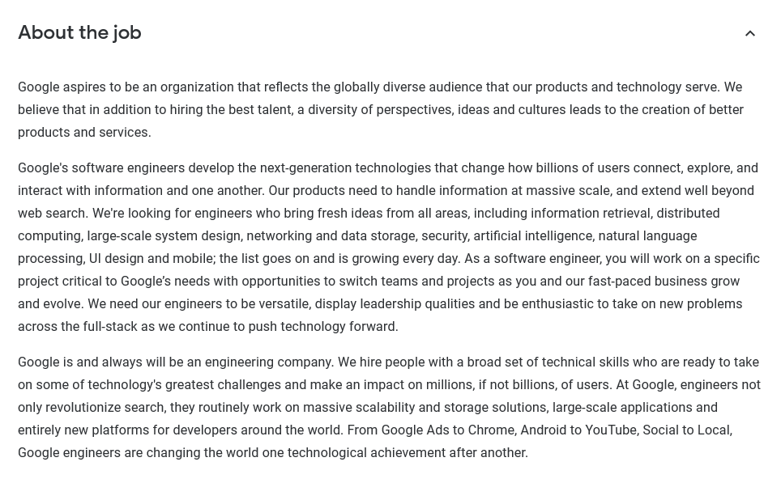

My name is Emmalee Beazleigh (S3819435), I was born and raised in Australia – where I only speak English and am learning Japanese in my spare time. I Graduated from high school in 2015, In 2016 I started a Double Degree in Bachelor of Forensic Science/Criminal Justice and I Stopped to pursue Early Childhood, where I worked and became a lead educator. After 2 and a half years at my centre, I wanted a Career change, so I decided to get into IT.
I love reading books as an escape, and I’ve loved reading since I was very young. My favourites include Harry Potter, To Kill a Mockingbird, Alice in Wonderland and also the Percy Jackson Series.
I have always loved computers and figuring out how things work. I used to enjoy playing games and creating simple programs with my Step-Brother. My dad also was a computer technician throughout my teenage years, and I loved learning about the hardware aspects of computers as well as the software side. When I was figuring out what kind of career change, I wanted to go into, I honestly didn’t think about IT as a choice until I was talking with my Dad. His passion for computers has really made me realise that Computers and Technology needs to be passion driven. I have such a huge passion and thirst for knowledge when it comes to Technology and the way things work.
I chose to Study at RMIT because they have a great online learning platform, where I am able to study close to home. I did a lot of research before I chose RMIT, and I chose it because of the flexibility it gives me with the course, and it means I can follow my passion of Information Technology.
Through this course I’m expecting to learn many things. For instance, learning the basics to coding a website such as this one. I’m also hoping to learn how to collaborate in a team with projects, and learn different programs we can use in order to share and help each other work. Im also hoping to learn what goes into creating a certain product/program, from prototype to product, including the legal and marketing aspects of said product.
This is my Dream Job that I found on the Google Careers Page (https://careers.google.com/jobs/results/6441926003982336/)
To me, a software engineer is someone who does a broad range of things, from programming to designing, to testing and exploring options. It requires you to be able to work in a big team, as It is such a large company with many different projects going off at once. This position greatly appeals to me as I absolutely love starting projects and getting them done, I love the whole process from start to finish, and I feel such a great sense of achievement once I’m done. I believe it would be the perfect job for me as I absolutely love creating and being innovative especially in a group of people.
The minimum qualifications for the job are:
• A bachelor’s degree in computer science, or a similar degree.
• Software development experience in one or more programming languages that are commonly used.
• Having experience working with two or more from the following: web application development, Unix/Linux environments, mobile application development, distributed and parallel systems, machine learning, information retrieval, natural language processing, networking, developing large software systems, and/or security software development.
• And also being able to working proficiency and have communication skills in verbal and written English.
Only just starting and showing a main interest in IT, I Do not have many skills, qualifications and experience that I need to be able to apply for the job. This insight helps me plan out the next few years, and gives me an opportunity to build up a portfolio of the programs I can create, and it shows that I do have a lot of work to do before I can get to where I want to be.
My plan is to Gain a Bachelor in computer science, continue on and complete a masters in computer science, through a lot of hard work I am hoping I can get into the Masters program. During my study, I need to learn as many different topics as I can and build a great portfolio to help get my foot into the door. This involves creating a useful phone app, be able to show that I am able to work in Linux environments and create web applications. This can all be done in my spare time, and it will show that I have the passion for the job that I want.
Link to answer https://www.16personalities.com/profiles/bfe0800779413
The results of this test show that I am quite introverted. I know I have trouble being in big groups and making new friends, which is something I try and work on and get out of my comfort zone a little bit. My anxiety gives me a lot of stress when it comes to talking with people, and making sure that everything is alright in regards to friendships, relationships and co-workers. I am a very intuitive person and I like getting things done quickly, as I like to make sure it is perfect before it is done. When it comes to making decisions and being confident in myself, I agree that I am not as confident as I should be. I always double and triple check my work before I can be confident enough that I’ve done a good job, which in hindsight would make me great for being in a team as I make sure my work is done correctly. I know that when it gets down to it, I can be quite assertive and take leadership, as I like making sure that tasks do get done. When it comes to forming a team, I feel like it would be best to have someone in the team that is very extroverted as it could balance the team out and work well.
Link to answer: http://www.educationplanner.org/students/self-assessments/learning-styles-results.shtml?event=results&A=5&V=7&T=8&N=Emmalee
I do love being a tactile learner, having something physically with me while I work, and being able to use a computer helps me with that. I love working on a computer, as tapping the keys and using the mouse help me register different pieces of knowledge better, and it also helps me calm down. I am basically constantly on the move as I love to be physical and I don’t like sitting still for long. Throughout my day I will go for walks or do some yoga to help myself relax and get back on track. Working in a team is beneficial for me as I like hearing input from others, and I like seeing projects come together. I tend to understand better when I write something down, such as a puzzle or equation and it helps me stay focused, sorting out one problem at a time. I should take this into account when forming a team, as everyone learns differently, and we all need to respect that how one person learns can be severely different than how another person learns.
Link to Answer: https://bigfive-test.com/result/5d7dc5fae108cb006217b0fd
Neuroticism was my highest result in the Big Five Test, with Anxiety being the highest part, which is understandable. It relates Neuroticism with high levels of anxiety, worry, fear and Frustration. I understand that my personality is very Introverted – which my Extraversion was somewhat high, as I am cheerful and quite friendly, my anxiety, which I do experience a big amount of it, it is something I am attempting to work on. Being open to experience, I do have a very big imagination, and I love imagining different scenarios, whether I do get anxiety about quite a few things, I am still willing to do many new things to try and become more extroverted in my life, and experience new things. My high level of Agreeableness is understandable as I do tend to feel sympathy for others and I love helping people in need. My conscientiousness result is the lowest, sometimes I do have trouble keeping to deadlines, but when it comes down to it, I get the work done. I have big plans for my future and I am excited to work hard for it. With these results it shows that I am quite a hard worker but also I have sympathy for others and I’m willing to help out where I’m needed. Its good to find a confident person to be in a group with, as they can balance out and we can work proficiently.
Skincare is a very important part of your life, especially if you are acne prone. Faces are sensitive and should require a steady routine to ensure it is receiving enough nutrients to balance itself out. This Mobile Phone App will help keep track of your daily routine for morning and night, and help you remember which order to use products, e.g. Cleanser before toner, and Serums after toner but before Moisturiser. It will also send reminders to your phone to help remind you to keep on track.
With the Skincare market’s global revenue being 18.4 Billion USD each year, 1.3 Billion being in Australia (Statista, 2019), It shows how important Skincare is to people. It makes them feel beautiful and confident, and keeping on top of it is necessary to ensure that your face is getting what it needs. The revenue has been steadily increasing for many years and it shows no signs of slowing down, so its great to have an app that can help people keep track and feel confident in their routines. This app will be easy to navigate and be straightforward for people who are new to skincare.
The app is one who keeps track of and shows you your face routine. You add all of your face products and you allocate them to certain days, and whether you use them in the morning, night or both, then what days you use them. If you use a certain face mask on certain days, it tells you the days and makes a schedule for you. After you ‘Tick’ off the certain products you have used, it shows it on a checklist, so you can keep track of what you have and haven’t done for the day so that you aren’t double cleansing or double toning your face, which can cause dryness. Also it gives you an option to give feedback on the way your face is feeling, and allows you to take photos so you can keep track of how your routine is going and if anything needs to be changed. It’s great for people who are trying new products on their face and people who are new to skincare. It has recommendations of what order to use certain products, so that if you are new to skin treatments, it shows you the better order, Say you bought a toner, cleanser, moisturiser and an essence for your face, it recommends you use it in this order: Cleanser, toner, essence and moisturiser, So that you don’t have to worry about doing it the wrong way. We could also add an auto add system, where you search up a product, and it recommends what order to put your routine in, in regards to your other products, and it can also check to make sure that it is suitable for your type of face. An example is trying to use tea tree products on Dry skin, and Tea Tree is a very drying product it should be used only on oily faces, as you don’t want to put a drying product on a face that is already very dry. This also helps people that are starting out with skincare as it’s a very confusing process of finding out what type your face is and which products are perfect for it. Also adding in a section for a “Quiz” to help people figure out whether their face is Oily, Dry, Combination or Normal, and then recommending some different options for them to try out. This could be beneficial as there aren’t man places or apps that have all this data and can help you keep track of everything. This can be created easily using “MIT App Inventor” for Android and “Thunkable” for IOS and Andriod, as they’re easy to use and great for learning how to create an app.
Using MIT App Inventor and Thunkable are a easy way to start learning how to create apps. It has everything in the program, and its even designed so children can makes apps too. It is a great way to start out, especially for such a simple app, that we could create the app in a small amount of time with no hassle. One other great thing about them is that while you are working on your app on your computer, you can have it up on your phone to see what it is looking like and how it is running live.
When starting out, MIT App Inventor and Thunkable are great starting places, until you can get a hang of programming apps. All you need is a phone, a computer, a working internet connection and an account with either program. There are quite a few tutorials online for how to use both, but they are straightforward with creating the app. A basics for design is handy as you do need to physically design the app, but the rest is straightforward.
If this app were to be created, it would help many people keep track of their skin care routines, so that they don’t forget, and also it will help them keep track of the progress of their face, to make sure that the products are working in the way that they want it to, and they are able to keep progress of their face. It could change the way that we keep track of our face routines, and help us out.